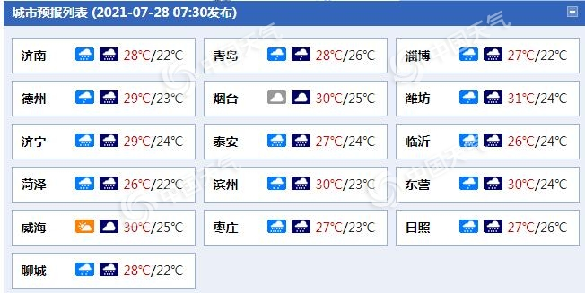

中国天气网讯 受台风“烟花”影响，今明天（7月28日至29日），山东雨大风强，鲁南、鲁中和鲁西北地区天气阴有暴雨或大暴雨，局部将有特大暴雨，阵风可达8～9级，公众请注意做好防范。
昨天，台风“烟花”开始影响山东，山东省气象台于27日15时发布台风蓝色预警信号和暴雨橙色预警信号，预计27日夜间至30日，山东自南向北有强降雨，风力增大。
今明天，山东进入强降水主要时段，部分地区有暴雨到大暴雨，局部特大暴雨；风力自南向北逐渐增大，内陆地区风力6～7级、局部阵风8～9级。
具体来看，山东省气象台预计，今天，鲁南、鲁中和鲁西北地区天气阴有暴雨或大暴雨，局部特大暴雨并伴有雷电，其他地区天气多云转阴有雷雨或阵雨。鲁西南和鲁西北地区北风3～4级逐渐增强到6～7级，阵风8～9级，其他地区东北风3～4级转东南风6～7级，阵风8～9级。

明天，山东全省天气阴，鲁西北、鲁中的北部和半岛西部地区有大到暴雨，局部大暴雨或特大暴雨并伴有雷电，其他地区有小雨。半岛地区东南风6～7级，阵风8～9级减弱到5～6级，阵风7级，鲁西南和鲁西北地区北风6～7级，阵风8～9级减弱到4～5级，阵风6级，其他地区南风6～7级，阵风8～9级减弱到4～5级，阵风6级。